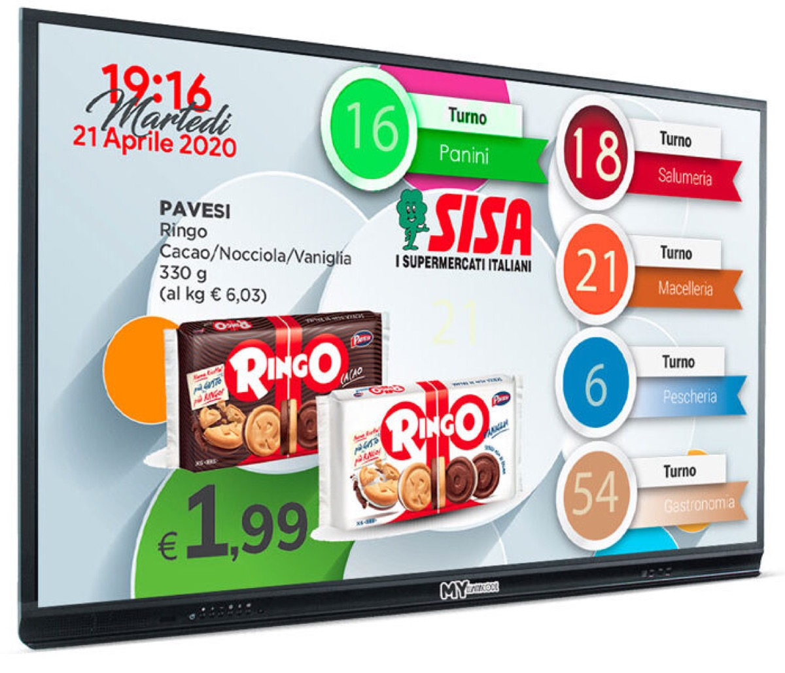

Guida commerciale
Per chi valuta o presenta la soluzione: il problema delle code nei reparti, come si risolve, cosa serve per installarla e cosa vede il cliente.
Il problema
Nei supermercati la coda non è una sola: ogni reparto ha la sua. Gastronomia, macelleria, pescheria, ortofrutta e casse servono persone diverse, con tempi diversi. Senza un sistema, il cliente non sa dove andare, il personale chiama a voce e chi aspetta si accumula davanti al banco sbagliato.
MyEliminaCode separa le code per reparto e rende visibile a tutti il numero chiamato. Il cliente prende un ticket, guarda il monitor e si presenta al banco quando arriva il suo turno.

Come funziona
- Il cliente prende il numero
Dal totem o dalla postazione di ingresso sceglie il reparto e ritira il ticket stampato.
- Il turno entra nella coda del reparto
Il numero viene registrato con reparto, data e ora di emissione.
- Il banco fa avanzare la coda
Con un mouse wireless, i tasti della bilancia o la postazione, il personale chiama il numero successivo.
- Il monitor annuncia
Numero e reparto compaiono a caratteri grandi sul monitor di sala, con l'avviso acustico previsto dal sistema.
- Lo schermo continua a informare
Negli intervalli tra una chiamata e l'altra il monitor mostra promozioni, news, meteo, immagini e video del punto vendita.
Pensato per più reparti
- Una coda separata per ogni reparto, con il proprio numero e la propria chiamata.
- Monitor di sala con l'elenco dei reparti e il numero in servizio.
- Postazioni diverse per ogni banco: mouse, tastiera o bilancia.
- Contenuti e messaggi differenziati per punto vendita.
Cosa serve
| Elemento | Descrizione |
|---|---|
| Mini PC Windows | Windows 10 o 11, collegato alla rete del punto vendita e al monitor. |
| Monitor o TV | Uno schermo per la sala, leggibile a distanza; eventuali monitor aggiuntivi per reparto. |
| Stampante termica | Epson TM-T88V o NipponPrimex, su USB o rete, per il ticket di ingresso. |
| Postazione reparto | Mouse wireless, tastiera o bilancia collegata al PC. |
| Rete locale | Switch e cavi; non serve Internet per far funzionare i turni. |
Perché conviene
Meno ressa davanti ai banchi
Ogni cliente sa quale numero è chiamato e in quale reparto.
Attesa trasparente
Il monitor mostra l'avanzamento reale della coda, non una stima.
Il monitor lavora anche da solo
News, offerte, meteo e video occupano i tempi morti della sala.
Windows 10/11, .NET Framework 4.7.2, rete locale, stampante termica compatibile e monitor collegato al mini PC. L'installazione e la configurazione sono descritte nella guida tecnica.